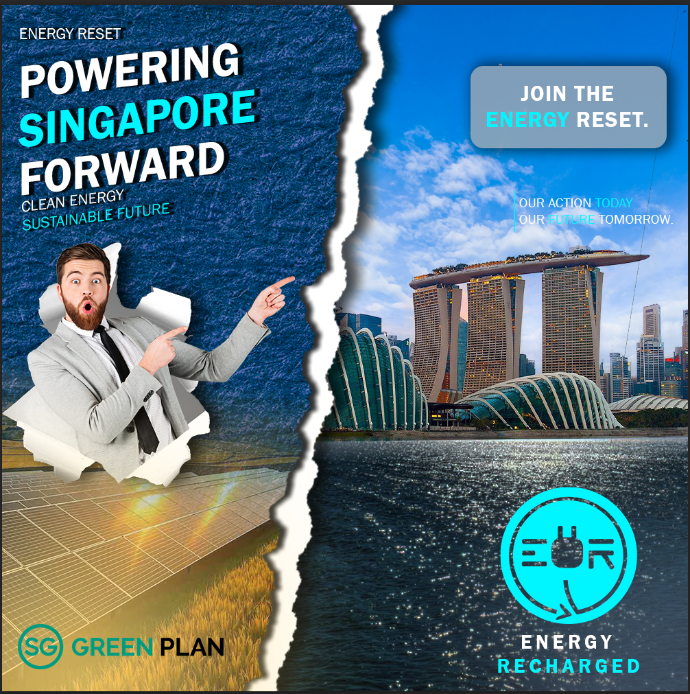
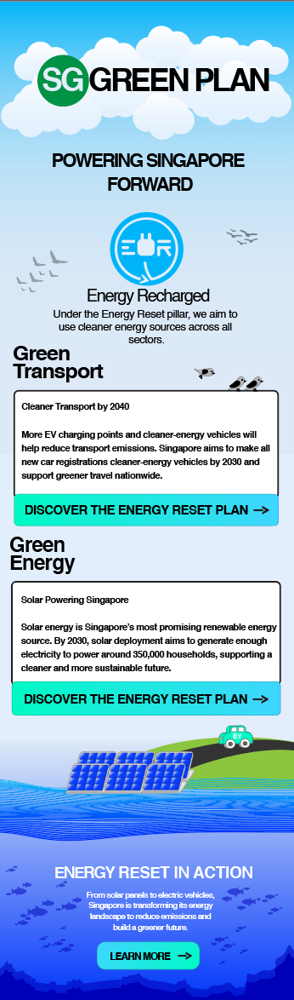
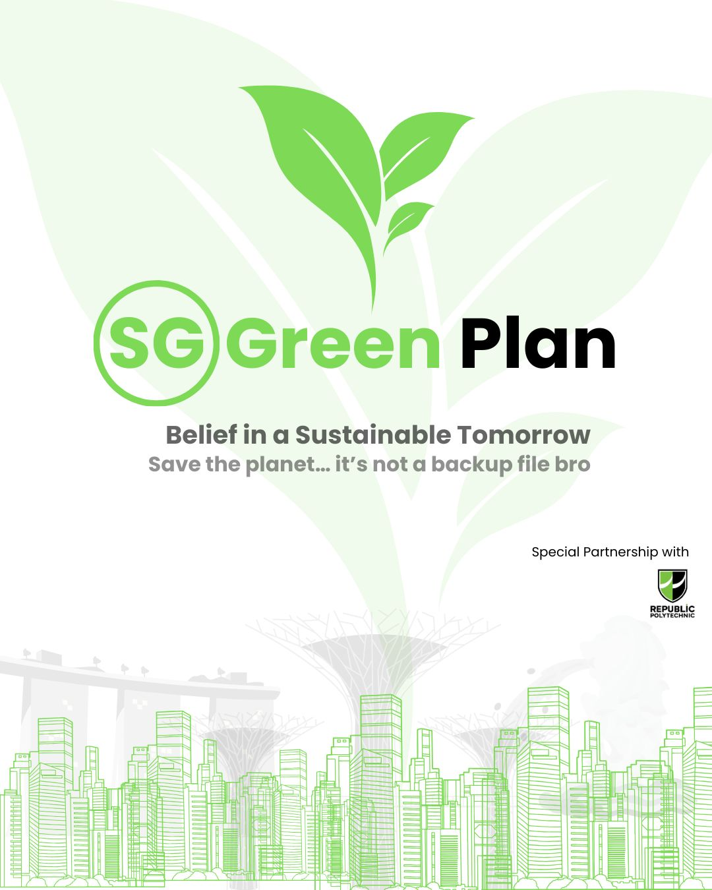
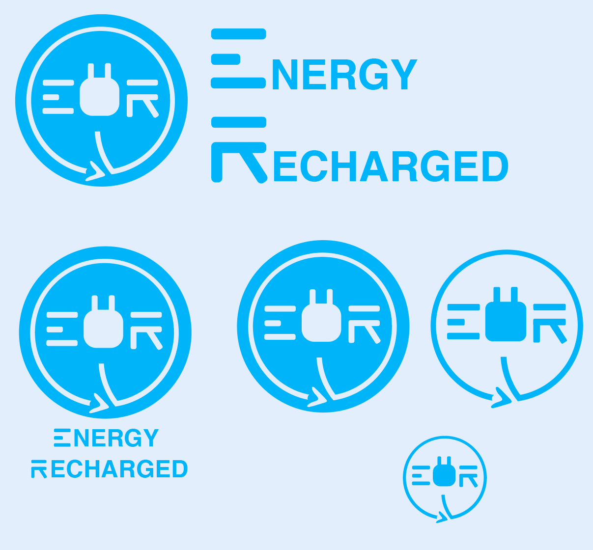

← Projects
DESIGN FUNDAMENTALS · YEAR 2 SEMESTER 1
Singapore Green Plan — Energy Reset
A visual campaign exploring Singapore's clean-energy transition through digital and social media design.
Project typeVisual Design
OVERVIEW
Powering Singapore Forward.
This Design Fundamentals project focuses on the Energy Reset pillar of the Singapore Green Plan 2030. The campaign uses a consistent visual identity across multiple digital formats to communicate renewable energy and sustainability.
DeliverablesDigital Banner · Instagram Grid · EDM · Key Visual · Logo
ToolsAdobe Photoshop · Adobe Illustrator
DESIGN OUTPUTS




